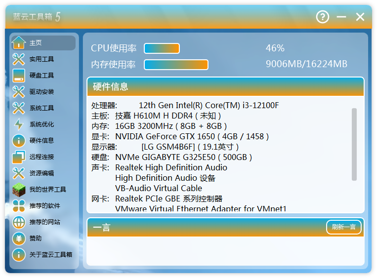
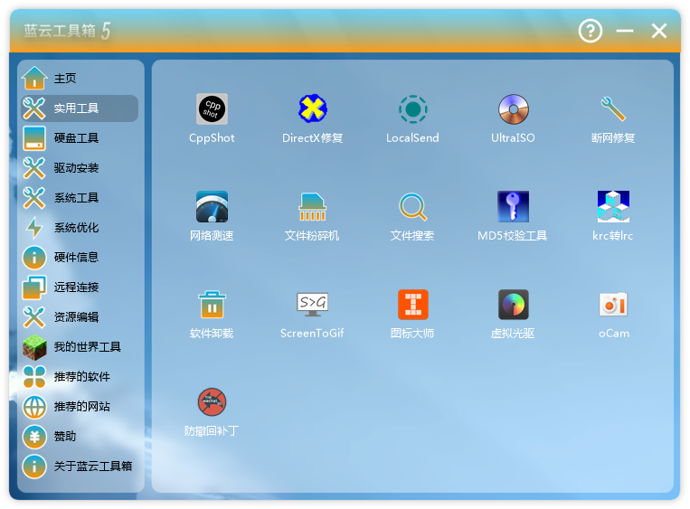
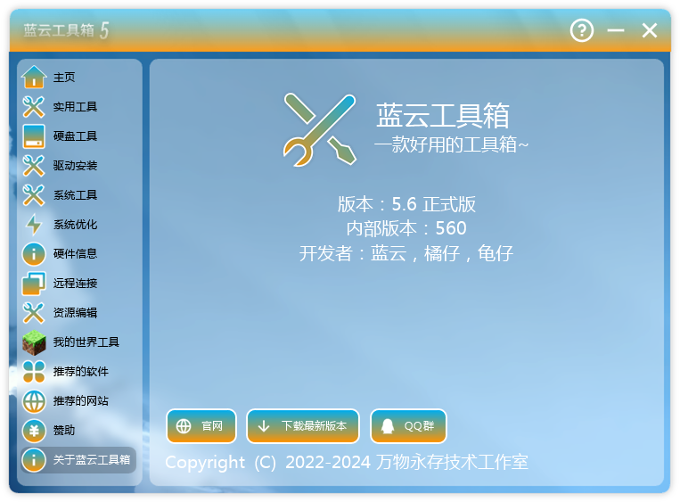
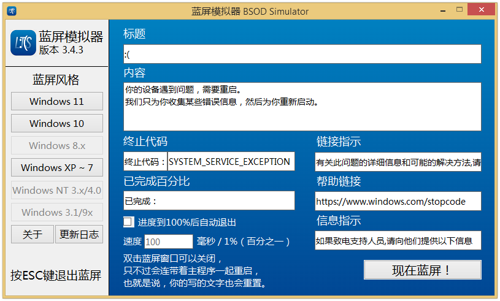

嗷呜~，欢迎来到蓝云和万物村小伙伴们的网站，awa~
Windows 交流群：602901509
我们的村子总群之一（可以交流美食哦）：720490870
桌面 Windows 版本全球市场份额
桌面 Windows 版本中国市场份额

蓝云工具箱
一款好用的工具箱
版本：5.6.0.560 大小：433MB 更新日期：2023-04-27
系统要求:Windows7及以上
下载链接
https://www.123pan.com/s/GLTtVv-BnejH.html
https://pan.huang1111.cn/s/EvElFb
https://www.alipan.com/s/7Pxhhbvh1U7



https://www.123pan.com/s/GLTtVv-BnejH.html
https://pan.huang1111.cn/s/EvElFb
https://www.alipan.com/s/7Pxhhbvh1U7
Windows 7 64位 以上系统（部分工具不支持 Win 7）
需安装（解压）工具箱的所有文件
显示器：推荐 1280×720 以上分辨率，最低 1024×768 分辨率
CPU：All CPU
硬盘：≥445MB 空间（运行其中的工具需预留C盘100MB左右和工具所在盘空间。）

蓝屏模拟器（LTS）
模拟蓝屏画面
系统:Win2000+ 版本：3.4.3 大小：1.54MB 更新日期：2024-04-10

https://www.123pan.com/s/GLTtVv-BnejH.html
https://pan.huang1111.cn/s/EvElFb
https://www.alipan.com/s/7Pxhhbvh1U7
- 系统：Windows 2000 以上系统
- 显示器：推荐 1024×768 以上分辨率
- CPU：All CPU
- 硬盘：≥1.6MB 空间

大柚子PE
模拟蓝屏
版本：2.2 大小：1MB 更新日期：2023-10-03


https://www.123pan.com/s/GLTtVv-BnejH.html
https://pan.huang1111.cn/s/EvElFb
https://www.alipan.com/s/7Pxhhbvh1U7
- 系统：Windows 2000 以上系统
- 显示器：推荐 1024×768 以上分辨率
- CPU：All CPU
- 硬盘：≥1.5MB 空间